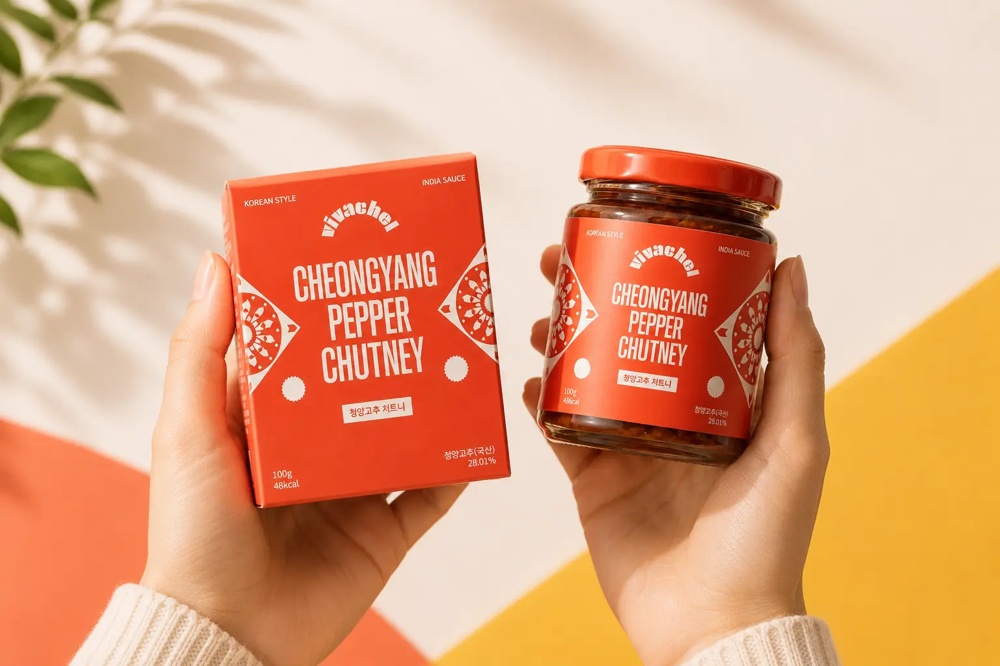
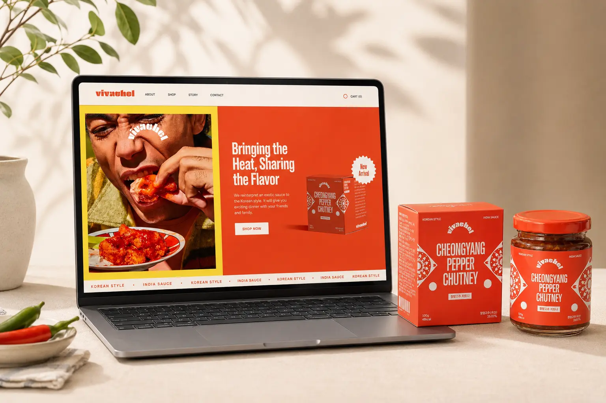
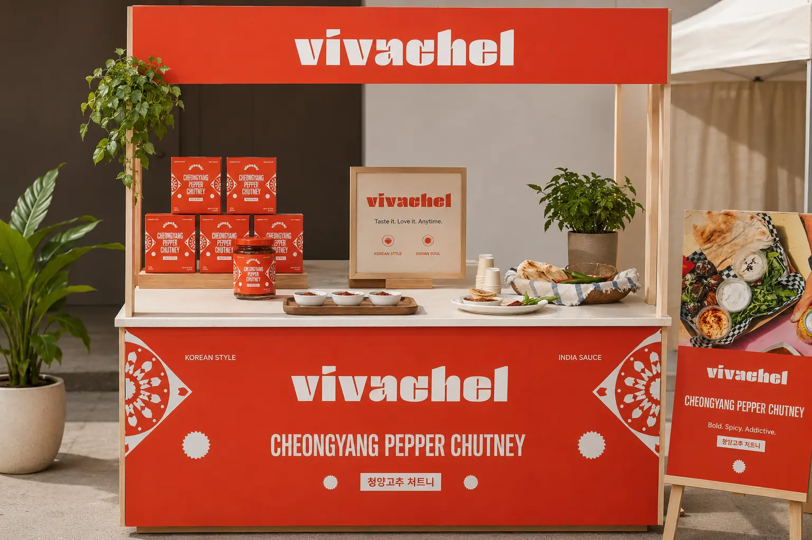
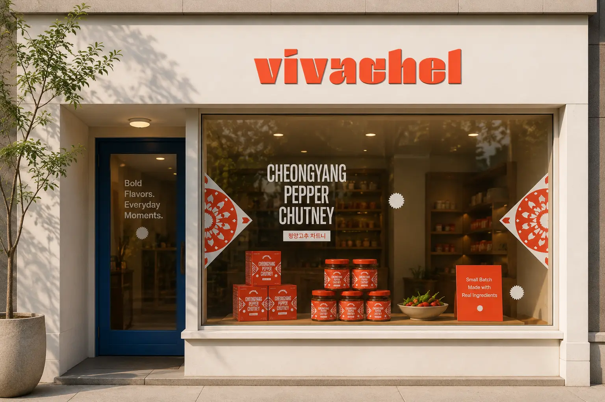
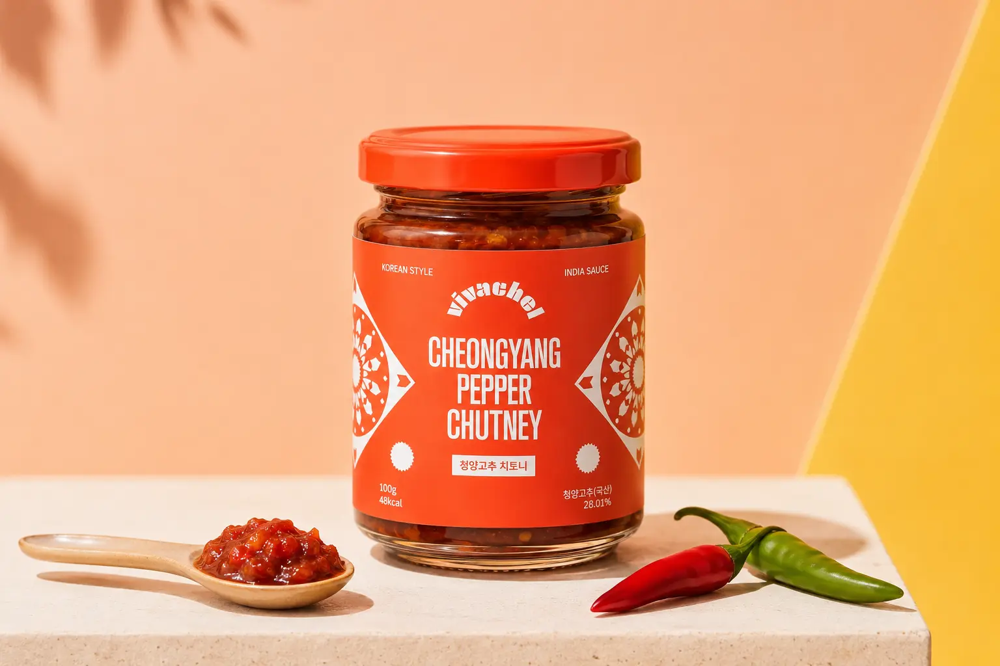
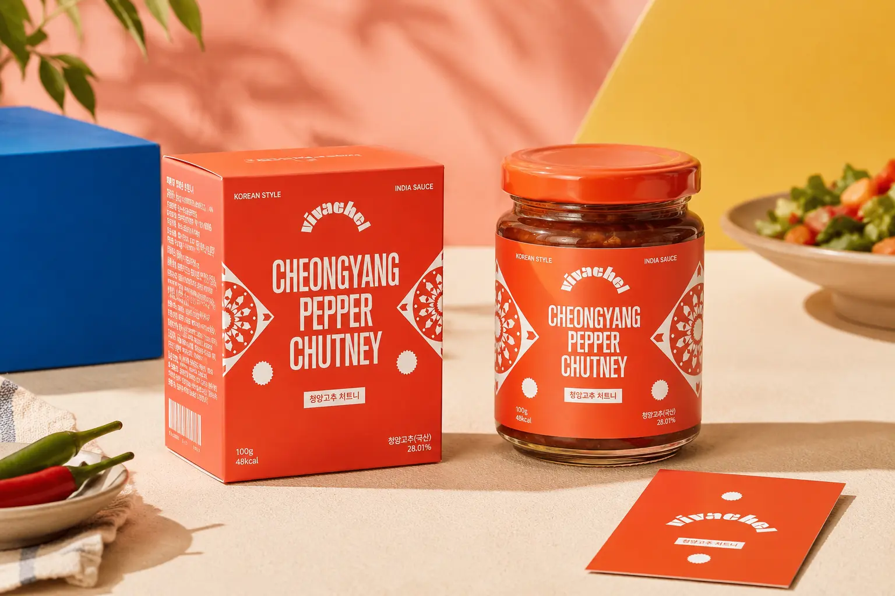
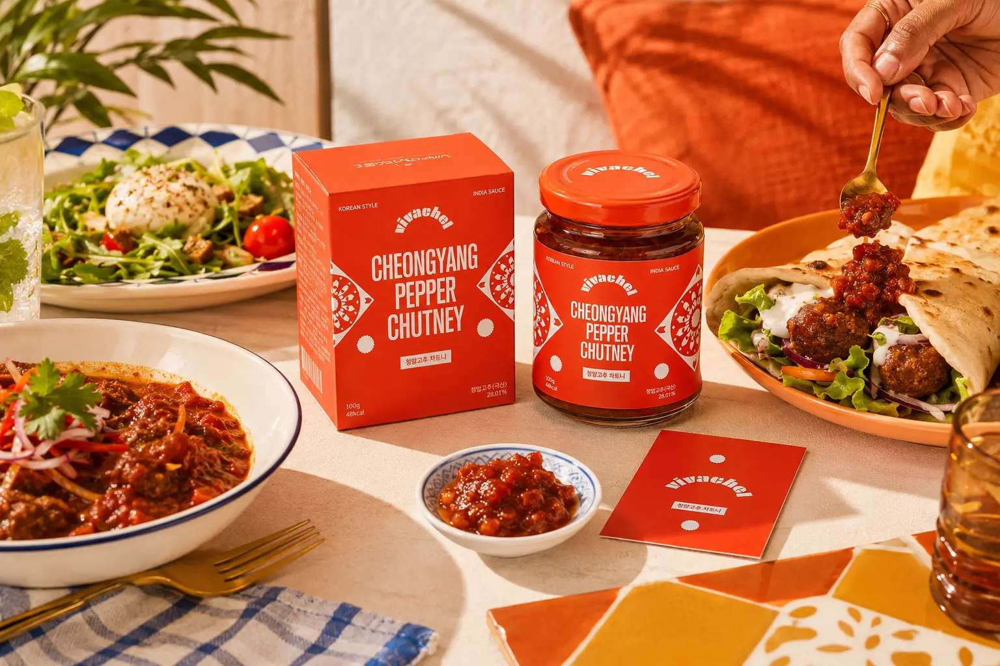

vivachel의 목표는 청양고추 처트니를 낯선 소스가 아닌 일상에서 쉽게 즐길 수 있는 새로운 맛의 선택지로 인식시키는 것이다. 브랜드는 한국식 매운맛과 인도 소스의 풍미를 연결해 익숙하면서도 새로운 식경험을 제공한다. 제품 패키지와 웹사이트에서는 CHEONGYANG PEPPER CHUTNEY라는 제품명을 강하게 노출해 핵심 제품의 성격을 직관적으로 전달한다. 팝업 부스와 매장 적용에서는 컬러, 패턴, 제품 진열을 적극적으로 활용해 소비자가 브랜드의 에너지와 맛을 직접 경험할 수 있도록 구성한다. 최종적으로는 vivachel을 강렬한 맛, 밝은 분위기, 이국적인 감각을 가진 퓨전 소스 브랜드로 자리 잡게 하는 것을 목표로 한다.
Portfolio / Brand Identity
VIVACEL
vivachel은 한국의 매운맛과 인도식 처트니 감성을 결합한 퓨전 소스 브랜드이다. 브랜드는 청양고추의 강렬한 매운맛을 바탕으로, 일상적인 식사에 새롭고 이국적인 풍미를 더하는 제품 경험을 제안한다. 전체적인 무드는 강렬한 레드 컬러와 밝은 옐로우, 블루 포인트를 중심으로 구성되어 있으며, 매운맛이 가진 에너지와 식문화의 즐거움을 시각적으로 표현한다. 패키지, 웹사이트, 팝업 부스, 매장 사인, 제품 디스플레이 등 다양한 접점에서 동일한 컬러와 그래픽을 유지해 브랜드의 인지도를 높인다. vivachel은 단순한 소스 제품이 아니라, 한국적인 매운맛을 새로운 방식으로 즐기게 하는 감각적인 푸드 라이프스타일 브랜드로 설계되었다.
- Scope
- Package / Local Food
- Studio
- BDLab
- Year
- 2026

vivachel의 핵심 메시지는 “Bringing the Heat, Sharing the Flavor”로 정리할 수 있다. 이는 단순히 매운 소스를 제공하는 것을 넘어, 강렬한 맛을 함께 나누고 식탁 위의 즐거움을 확장한다는 의미를 담고 있다. “Bold Flavors. Everyday Moments.”라는 문구는 vivachel이 특별한 요리뿐 아니라 일상적인 식사에서도 활용될 수 있는 브랜드임을 보여준다. “Small Batch Made with Real Ingredients.”는 제품의 신선함과 진정성 있는 원료 이미지를 강조한다. 전체적으로 vivachel은 강렬한 매운맛, 이국적인 풍미, 일상 속 즐거운 식경험이라는 메시지를 중심으로 브랜드 방향성을 전개한다.
vivachel의 디자인은 강렬한 레드 컬러와 화이트 타이포그래피를 중심으로 구성되어 있다. 제품 패키지 전면에는 굵고 좁은 영문 타이포그래피를 크게 배치해 청양고추 처트니의 강한 맛과 브랜드의 자신감을 직관적으로 보여준다. 좌우에는 인도 패턴을 연상시키는 장식 그래픽을 적용해 제품이 가진 퓨전 소스의 성격을 시각적으로 표현했다. 전체 레이아웃은 복잡하지 않지만 컬러 대비와 패턴 요소가 강해 멀리서도 제품이 눈에 띄는 구조이다. 디자인 전반은 매운맛의 에너지, 이국적인 감성, 대중적인 즐거움을 균형 있게 결합한 것이 특징이다.





